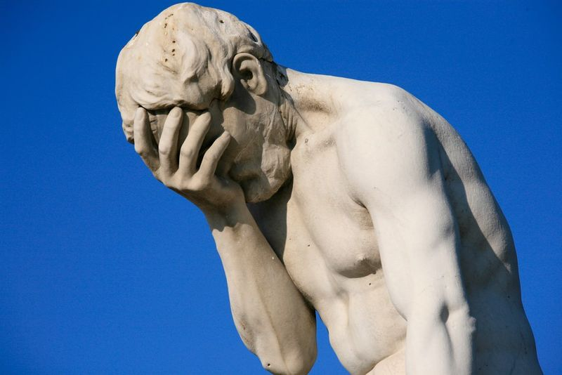
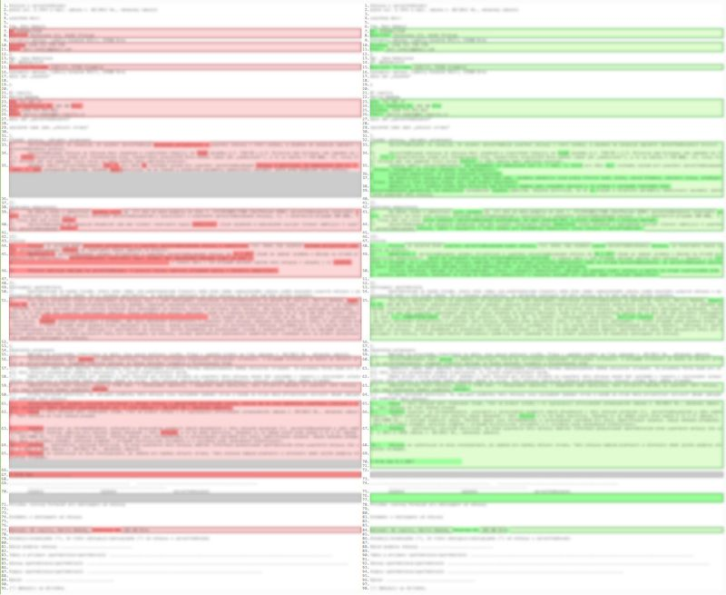
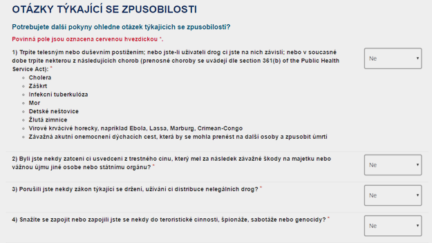

Povím vám příběh o tom, jak jsme po zdlouhavém vyjednávání odstoupili od koupě pozemku. Neuvěříte do jak absurdní situace se člověk může dostat. Budu vám vyprávět o značně neprofesionálním přístupu jedné nejmenované realitní kanceláře a o tom, že ne všichni lidé jednají férově a klidně vám podrazí nohy, když to nejmíň čekáte. Ale začněme hezky od začátku…
V hlavních rolích:
- Pan N (N jako neschopný) jako realitní makléř
- Pan K (K jako kápo) jako majitel pozemku
- Pan S (S jako soused) jako soused
Screening pozemku
Loni v prosinci 2016 jsem po dlouhém hledání konečně narazil na docela pěkný pozemek. Nacházel se v obci nedaleko Brna a splňoval všechny naše požadavky. Inzerát jsem objevil na Sreality.cz. Ihned jsem odepsal na inzerát a domluvili jsme si s realitním makléřem prohlídku. Nejmenovanou realitní kancelář představovala jediná osoba - soukromý podnikatel zapsaný v živnostenském rejstříku. Nechci zde zmiňovat jeho jméno, proto ho budu nazývat “pan N”. Realitka jakožto podnikající fyzická osoba - to je poměrně netypické, ale bral jsem to jako výhodu. Ostatně sám pan N uvádí na svém webu:
Jsme poměrně malá realitní kancelář a chtěli bychom, aby to tak i zůstalo, abychom mohli každému z Vás nabídnout opravdu osobní a individuální přístup. To vše samozřejmě podporují naše rozsáhlé zkušenosti i kvalitní právní servis. Smyslem naší práce není jen zprostředkovat prodej či pronájem, ale zajistit Vám abyste v co největším pohodlí a klidu získali svůj nový domov.
To zní skvěle! V té době jsem však ještě netušil, jak to s těmi “rozsáhlými zkušenostmi” a “kvalitním servisem” doopravdy je. Neměl jsem tucha, že při následujících 4 měsících jednání budu místo “největšího pohodlí” žít v napětí, stresu a nejistotě, jak to nakonec všechno dopadne.
Prohlídka pozemku proběhla docela v pohodě, ale bylo poznat, že pan N ví o pozemku jen ty nejzákladnější informace a některé z nich, jak jsme později zjistili, byly dokonce chybné. Například nám tvrdil, že podmínkou budoucí stavby je sedlová střecha, což nebyla pravda, jak jsme se posléze dozvěděli na stavebním úřadě. Na prohlídkách bývá obvyklé, že makléř předloží výpis z katastrální mapy, případně i výpis z katastru nemovitostí. Nic takového jsme bohužel nedostali. U kvalitní realitní kanceláře by to měla být samozřejmost.
Po několika dnech zvažování jsme se s manželkou usnesli, že se nám pozemek líbí a že ho chceme. Nicméně celková cena investice při započtení provize RK a daně z nabytí překročila náš limit, který jsme si předem stanovili. Napsal jsem panu N, že bychom měli o pozemek zájem, ale za podmínky, že by provizi RK platil prodávající, resp. za cenu sníženou o provizi RK. Na to jsme dostali od makléře přímou odpověď:
Bohužel tato varianta nepřichází v úvahu.
Tato odpověď mi nedává moc smysl. Koupě pozemku je přeci obchod mezi 2 stranami, kdy kupující a prodávající se snaží vzájemně dohodnout na ceně, kterou jsou schopni oba akceptovat. Já jako kupující jsem navrhl nějakou cenu, ale zprostředkovatel (realitní kancelář) ani není ochotný moji nabídku předat prodávajícímu? Zprostředkovateli přeci nepřísluší, aby ovlivňoval či rozhodoval o tom, zda prodávající akceptuje nabídku druhé strany! Zprostředkovatel je tu od toho, aby pomohl obou stranám uzavřít vzájemný obchod. Pokud se o to nesnaží, není dobrým zprostředkovatelem.
Odepsal jsem panu N, že daná kupní cena je pro nás příliš vysoká a že se domnívám, že o ceně za nemovitost lze s panem majitelem jednat. Také jsem pana N požádal o osobní schůzku, abychom vše mohli probrat osobně. Po několika vyměněných mailech jsme získali překvapivě pozitivní odpověď. Majitel pozemku je ochotný snížit původní cenu. A pak že to nepřichází v úvahu!
Schůzka proběhla v lednu, v kanceláři pana N. Řešili jsme hlavně kupní cenu a provizi RK. Majitel pozemku snížil cenu cca o 250 Kč / m2 a k tomu pan N zaokrouhlil původní provizi 5% mírně dolů na rovných 200000 Kč. Výše provize nám i tak přišla nepřiměřeně vysoká. V ČR se provize RK pohybují mezi 3% - 5%, přičemž se zvyšující se cenou nemovitosti výše provize klesá. Je logické, že např. garáž za sto tisíc bude mít nastavenu vyšší provizi, než vila s bazénem za miliony. Necelých 5% za nemovitost v hodnotě několika milionů Kč je však stále poměrně hodně. Právní služby rozhodně nebudou stát tolik a čas, který do nás makléř investuje, nebude nijak závratný v porovnání s tak vysokou odměnou. S výší provize ale bohužel nic nenaděláme, nicméně za tak šílenou cenu budeme očekávat nadstandardní servis. Na schůzce jsme dále zjišťovali nejrůznější informace. Žádali jsme o vzor smluvní dokumentace, avšak pan N nás ujistil, že žádné vzory ani šablony nemá a všechny smlouvy se píší na míru klientovi. To nám přišlo podivné a dost neefektivní. Později jsme zjistili, že nám makléř lhal a šablonu samozřejmě používá. Ostatně sám později při řešení rezervační smlouvy přiznal, že zapomněl v šabloně něco doplnit.
Po pár dnech rozmýšlení jsme se rozhodli, že za daných podmínek máme o pozemek závazný zájem a budeme pokračovat v jednání. Dosud jsme neměli o panu majiteli téměř žádné informace. Od pana N jsme se dozvěděli jen to, že se jedná o staršího pána v penzi, který vlastnil v obci velké pozemky, na kterých vybudoval sítě a postupně vše rozprodal. Jedná se o místního milionáře. Nechci zde uvádět jeho jméno, proto ho budu nazývat “pan K”.
Požádal jsem pana makléře, zda by nám mohl poskytnout potřebné podklady - zejména list vlastnictví, výpis z katastrální mapy a nabývací titul prodávajícího. Dostal jsem však pouze screenshoty z nahlizenidokn.cuzk.cz a odpověď:
Co se dokumentů týče, tak si nejsem jist, jestli opravdu chcete, co píšete. Vzhledem k výpisu z katastru mi není úplně jasné k čemu chcete nabývací titul.
Co není jasné? Mělo by být pochopitelné, že pokud kupuji nemovitost za několik milionů Kč, chci mít k dispozici veškeré podklady a informace, abych se ujistil, že pozemek nemá žádné právní vady. Od kvalitní realitní kanceláře bych očekával, že poskytne úplný výpis z KN. Pokud platím realitce provizi 200000 Kč, tak očekávám špičkový a nadstandardní servis. Zajít na úřad a získat dané podklady, které klient žádá, přeci není pro makléře taková zátěž, kor když je za to bohatě odměněn. To co jsem však od pana N dostal si můžu najít na internetu sám. Nakonec jsem si musel úplný výpis zařídit sám.
Je docela smutné, že realitní makléř neví, proč je vhodné při koupi nemovitosti ověřit nabývací titul. Musel jsem to sám panu N vysvětlit. Nabývací titul jednoznačně dosvědčuje, že prodávající je právoplatným vlastníkem. Mohlo by se například stát, že sám prodávající koupil nemovitost od někoho, kdo nebyl vlastníkem. Ve skutečnosti je třeba prověřit nabývací tituly za posledních deset let, abychom si byli jisti, že nikdo nebude moci naše vlastnictví u soudu napadnout. Deset let je totiž zákonná lhůta pro vydržení, kdy majetek přechází na toho, kdo ho v dobré víře užívá, přestože není vlastníkem. Ověřit nabývací titul doporučuje například i portál realcity.cz. Dostal jsem následující odpověď:
Já samozřejmě vím, k čemu slouží nabývací titul. Můj údiv spíše spočíval v tom, že již tuto práci dělám opravdu mnoho let a zatím nikdo nikdy nic takového nechtěl.
Takový postoj mi přijde dost neprofesionální. Jedná se o legitimní požadavek, který by měl být zcela pochopitelný. To že po panu N nikdo nikdy nechtěl nabývací titul je podivné, ale i tak to přeci neznamená, že o něj nemůžu žádat já.
Dále jsem pana makléře požádal, zda by nám mohl zajistit potvrzení od všech správců inženýrských sítí, že je možné se připojit a že kapacita je dostačující. Pozemek totiž nemá zřízeny žádné přípojky. Veškeré inženýrské sítě se nachází v přilehlé komunikaci a přípojky je potřeba vybudovat. V obci je navíc problém s nedostatečnou kapacitou ČOV a my neměli dosud žádnou záruku, že bude možné se v budoucnu na sítě připojit - zvláště na kanalizaci. Na to mi pan N odpověděl, že toto po něm také nikdo nikdy nežádal, ale že se pokusí vyzjistit více info. Potvrzení nám pan N nezařídil, nicméně alespoň nám zaslal kontakty na místní správce sítí. Kontakt na správce elektrické energie však nebyl správný - není to EON, nýbrž místní distributor. Nakonec jsem si vše musel opět vyřídit sám. Během toho jsme také zjistili, že pan N nám původně poskytl nesprávnou informaci - přípojka na kanalizaci totiž již existuje, což jsme nevěděli.
Je velmi smutné, že realitce zaplatíte provizi 200000 Kč a ona ani není schopna vám poskytnout základní servis. Všechno jsem si musel zjišťovat sám. Opravdu nechápu, za co máme platit tak nesmyslně vysokou provizi. Nedělám si iluze, že všechny realitky na světě jsou seriózní a poskytují kvalitní servis. Zvláště v dnešní době, kdy poptávka značně převyšuje nabídku. Realitky jsou v takové pozici, že nemusí dělat nic extra navíc, protože když nekoupím já, koupí kdokoliv jiný z mnoha dalších zájemců. Na druhou stranu si nemyslím, že bychom po panu N požadovali něco extra. Jen jsme chtěli využít námi placenou provizi na maximum a nechat realitku, aby pro nás vše bez starostí vyřídila. To bohužel nezafungovalo. Z vyššího principu mravního mě štve, jak některé realitky fungují - ne jako služba zákazníkům, ale spíše jako “vydělat si co nejvíc peněz za co nejmíň námahy”.
Rezervační smlouva
Nastal únor, od první prohlídky pozemku uplynul měsíc a půl. Po několika vyměněných mailech jsem pana makléře požádal, zda můžeme přistoupit k rezervační smlouvě. Zaslal jsem mu naše osobní údaje a do druhého dne jsme obdrželi návrh smlouvy (že by šablona?) a informace pro spotřebitele.
K našemu zděšení jsme zjistili, že smlouva není standardní rezervační smlouvou, ale smlouvou o zprostředkování příležitosti k uzavření obchodu. Jedná se o obvyklý trik méně seriózních realitek. Hezky o tom pojednává článek Proč si asi nikdy nekoupíme byt, který mi úplně mluví z duše (doporučuji přečíst). Více tento problém rozeberu níže. Rezervační smlouva byla celkově napsána pro nás velmi nevýhodně a obsahovala chyby faktické i formální (překlepy, chybějící interpunkční znaménka, chybné formátování a číslování odstavců). Realitka měla dokonce ve smlouvě uvedenou starou adresu. Mnoho odstavců jsme museli upravovat.

Pojďme se podívat na jednotlivé nedostatky nám předložené rezervační smlouvy. Budu uvádět reálné části textu ze smlouvy.
Zprostředkovatel se zavazuje, že zájemci zprostředkuje obstarání příležitosti k uzavření smlouvy s třetí osobou, a zájemce se zavazuje zaplatit zprostředkovateli provizi.
Tato věta v podstatě znamená, že realitka nás spojí s majitelem nemovitosti a předloží nám nějaký návrh kupní smlouvy. Za to zinkasuje provizi 200000 Kč bez ohledu na to, jestli obchod proběhne či nikoliv. Realitka má svoji odměnu jistou a kupující se musí modlit, aby vše dopadlo dobře. “Obstarání uzavření smlouvy” vs. “Obstarání příležitosti k uzavření smlouvy” je rozdíl v jednom slově, ale ve skutečnosti vás může připravit o nemalé množství peněz v případě, že k uzavření obchodu nedojde.
Obstaráním příležitosti se myslí předložení návrhu kupní smlouvy. Nikde už se však neřeší, co bude daná kupní smlouva obsahovat, jak bude výhodná/nevýhodná, jaké bude mít náležitosti. Kupující nemá žádnou jistotu, zda bude ochoten podmínky předložené smlouvy vůbec akceptovat. K rezervační smlouvě by proto měl být přiložen i návrh smlouvy kupní. Ten jsme samozřejmě nedostali.
Zájemce sdělil zprostředkovateli vše, co pro něho má rozhodný význam pro uzavření zprostředkovávané smlouvy a potvrzuje, že nemovitost jeho požadavkům odpovídá.
Tato věta je příliš obecná a nic neříkající. Realitka se tím pouze jistí, že se vším souhlasíme. Navrhli jsme zde přidat alespoň 3 základní záruky:
1) Vlastník nemovitosti je jejím výlučným vlastníkem. 2) Na nemovitosti neváznou žádné právní ani faktické vady, zejména jakákoliv jiná práva třetích osob, dluhy, věcná břemena, zástavní práva, předkupní práva, nájemní a jiná užívací práva ani jiné právní povinnosti. 3) Nemovitost je v územním plánu obce vedena jako stavební parcela a je určena k výstavbě rodinného domu.
Na důkaz zájmu o nemovitost zájemce složí do tří dnů od data podpisu na účet zprostředkovatele rezervační kauci rovnající se svou výší provizi účtované zprostředkovatelem v souvislosti s uzavřením zprostředkovávané smlouvy.
Kauce by měla být složena do advokátní úschovy, nikoliv přímo na účet realitce. Kauce by měla být vyplacena až v momentě, kdy dojde k zápisu nových vlastníků do KN. Jakou máme záruku, že nám budou peníze vráceny, pokud k uzavření kupní smlouvy nedojde?
Provize je splatná dnem obstarání příležitosti k uzavření zprostředkovávané smlouvy k nemovitosti tzn. dnem, kdy zájemce dostane příležitost uzavřít zprostředkovávanou smlouvu, se rezervační kauce započte na provizi.
Tak toto je vrchol! Jak si někdo vůbec může dovolit toto napsat do smlouvy a čekat, že to podepíšu? Zájemce tímto podstupuje obrovský risk, zatímco zprostředkovatel má svou odměnu jistou, ať se děje co se dějě. Takto si jednání seriózní realitní kanceláře rozhodně nepředstavuji. Navrhli jsme tuto větu upravit tak, že provize je splatná dnem uzavření zprostředkovávané kupní smlouvy.
Dále jsme přidali následující větu: V případě, že k uzavření kupní smlouvy nedojde z důvodů na straně vlastníka nemovitosti nebo na straně zprostředkovatele, je zprostředkovatel povinen kauci zájemci bez zbytečného odkladu vrátit na bankovní účet, ze kterého byla kauce uhrazena.
Pokud bychom ihned přistoupili na předloženou rezervační smlouvu, byli bychom dnes o 200000 Kč chudší, jak později uvidíte. Výše uvedená věta, kterou jsme do smlouvy přidali, nás zachránila.
Provize zahrnuje náklady na zprostředkování. V provizi nejsou zahrnuty případné výpisy z katastru nemovitostí.
Původně jsme se s panem N domlouvali, že veškeré další náklady bude hradit zprostředkovatel. Proč je tedy ve smlouvě něco jiného? Větu jsme upravili tak, že provize zahrnuje: náklady na zprostředkování, výpisy z katastru nemovitostí, náklady na sepsání kupní smlouvy a návrhu na vklad vlastnického práva, úschovu peněz u advokáta, poplatek za vklad do katastru nemovitostí a znalecký posudek pro výpočet daně z převodu nemovitosti.

Jen pro zajímavost, toto je rozdíl mezi první a finální podobou rezervační smlouvy. Jak je vidět, museli jsme udělat mnoho úprav, abychom dostali smlouvu do přijatelné podoby.
K našemu překvapení, pan N na většinu našich připomínek přistoupil. Slíbil, že nám předloží návrh kupní smlouvy ještě před podpisem rezervace. Jediný bod, na kterém jsme se nedohodli, byla advokátní úschova kauce.
Na začátku března jsme si s panem N domluvili schůzku, kde jsme měli rezervační smlouvu podepsat. Schůzka proběhla, ale smlouvu jsme nepodepsali, protože slíbený návrh kupní smlouvy nám byl zaslán až večer den předem, takže jsme ani neměli čas si ji prostudovat. Rezervaci jsme tedy podepsali až týden na to. Následně jsme panu N odeslali rezervační kauci 200000 Kč.
Kupní smlouva
Od pana N jsme na začátku března dostali 2 dokumenty: návrh kupní smlouvy a smlouvu o zřízení věcného břemene (k příjezdové cestě). Obě smlouvy opět obsahovaly chyby a různé nedostatky. Kromě pravopisných chyb zde byly i velmi závažné chyby - špatné rodné číslo a chybná kupní cena s jednou nulou navíc na konci. Smlouvy jsem dal ke kontrole i mojí mámě, která má s touto problematikou bohaté zkušenosti, jelikož celý život pracovala v bance jako úvěrový specialista. Ta konstatovala:
Chyb tam má pan N jako máků, to člověk musí větu přečíst alespoň 2x, aby pochopil, co má znamenat.
Smlouvy opravdu nebyly kvalitně napsané a chyběly nám v nich některé náležitosti. Navrhli jsme tedy několik úprav.
Do kupní smlouvy jsme přidali odstavec o tom, že prodávající se zavazuje předat pozemek kupujícím řádně vyklizený. Vyklizením pozemku se rozumí, že prodávající na vlastní náklady uvede pozemek do způsobilého stavu, zejména odstraní zbytky starého oplocení, plevel a jiné volně ležící předměty. Pozemek byl totiž tou dobou v poměrně zanedbaném stavu.
Dále jsme přidali odstavec, který zaručuje, že pokud katastrální úřad zamítne návrh na vklad věcného břemene k příjezdové cestě, která je ve vlastnictví pana K, kupní cena bude vrácena zpět a k danému převodu vlastnických práv nedojde. Bez příjezdové cesty je totiž pozemek zcela k ničemu.
Kupní smlouva neobsahovala téměř žádné záruky prodávajícího. Přidali jsme tedy několik záruk a prohlášení, které nám doporučil náš známý právník a které se do kupních smluv běžně dávají. Uvádím záruky ve zkrácené podobě:
- Pozemek je ve výlučném vlastnictví prodávajícího.
- Prodávající platně nabyl vlastnické právo k pozemku a nabývací titul k němu je platný a účinný.
- Na pozemku neváznou žádné právní ani faktické vady, zejména jakákoliv jiná práva třetích osob, dluhy, věcná břemena, zástavní práva, předkupní práva, nájemní a jiná užívací práva ani jiné právní povinnosti.
- Neexistují žádná zatížení pozemku, pro jejichž vznik není třeba zápisu do katastru nemovitostí, ani nebyla zřízena žádná práva k pozemku ve prospěch třetích osob, jež by doposud nebyla do katastru nemovitostí zapsána.
- V okamžiku uzavření této smlouvy nejsou projednávány žádné právní spory s třetími osobami jakéhokoli druhu, žádná soudní a/nebo správní řízení, která se bezprostředně nebo nepřímo vztahují k pozemku.
- Prodávajícímu není známa žádná skutečnost, na základě které by mohlo být k pozemku zřízeno soudcovské/exekutorské zástavní právo.
- Prodávající neuzavřel žádné písemné či ústní smlouvy zřizující jakékoli právo koupě nebo zatížení pozemku ve prospěch jakékoli třetí osoby.
Prohlášení prodávajícího:
- Prodávající řádně a včas plnil veškeré smluvní a zákonné povinnosti ve vztahu k pozemku, zejména hradil daně, poplatky či jiné povinné platby.
- Uzavřením této smlouvy neporuší smluvní či zákonný závazek vůči třetím osobám.
- Není v úpadku, a jeho majetkové poměry neopodstatňují podání insolvenčního návrhu.
- Není jakkoliv omezen v nakládání s pozemkem, ani mu není známa žádná okolnost, která by bránila uzavření této smlouvy, ani provedení vkladu vlastnického práva do katastru nemovitostí ve prospěch kupujících.
- Na jeho majetek není vedena exekuce nebo nucený výkon rozhodnutí.
- Veškeré informace ohledně pozemku, které kupujícím poskytl, jsou pravdivé, správné a úplné.
Dále jsme ve smlouvě upravili odstavec, který pojednával o tom, kdo bude co hradit. Bylo zde mylně uvedeno, že kupující hradí úschovu peněz a poplatek za podání návrhu na vklad vlastnických práv. Toto je opět v rozporu s tím, na čem jsme se předtím s panem N domluvili. Chyba zřejmě vznikla kopírováním obsahu smlouvy ze šablony či jiné smlouvy.
Do smlouvy o zřízení věcného břemene jsme přidali, že se věcné břemeno zřizuje na dobu neurčitou a odstranili jsme slovíčko “bezplatně”. Praxe finančních úřadů je dle našeho právníka taková, že každé bezplatně nabyté plnění by mohlo být předmětem daně z příjmů za bezúplatné nabytí majetku (v tomto případě práv). Poplatníkem by byli oprávnění. Cena za zřízení věcného břemene je součástí kupní ceny pozemku.
Návrh kupní smlouvy jsme s výše uvedenými úpravami zaslali panu makléřovi a požádali ho, zda by jej předal panu K. Vyjádření pana majitele nám pan N zaslal až po 3 týdnech čekání, na začátku dubna.
Pan K dle zprostředkované odpovědi v mailu nevypadal, že by byl ochotný přijmout jakékoliv změny ve smlouvě a chtěl od nás vysvětlení k jednotlivým bodům původní smlouvy, kde chceme změnu a proč. Uvedl, že od nás dostal “novou kupní smlouvu” - asi narážka na velké množství úprav. Dále napsal, že pozemek se prodává “jak stojí a leží” a že tedy žádné vyklízení pozemku dělat nebude.
Pan N k tomu ještě přidal několik slov:
Na kontrolu smluv si vezměte případně někoho, kdo s tím má zkušenost a ví co dělá. Neberte to prosím ode mne nějak zle. Je to doporučení, které míním ve vašem zájmu. Nevím, kdo Vám to dělal, ale už jsem viděl hodně připomínkovaných smluv a toto je řekněme poněkud “nestandardní”.
Co je nestandardní? Když je ta smlouva napsaná nekvalitně a pro nás nevýhodně, tak ji nepodepíšu a budu ji muset upravit do přijatelné podoby. Předloženou smlouvu jsme samozřejmě konzultovali i s právníkem. Pan N pokračuje ve svých rozumech:
Jeden příklad za všechny, abyste věděli proč o tom mluvím. Ta osoba co, vám dělal korekci smlouvy navrhuje upravit článek VI., kde tam přidává moji osobu. Fakticky s tím problém není, nicméně pokud toto přidá do KS a já nebudu účastníkem smlouvy, tak katastr téměř s jistotou přeruší řízení a takto smlouva neprojde (samozřejmě, že náhodou to projít může). A to ani nemluvě o tom, že právní dopad tohoto bodu ve smlouvě za daných okolností je naprosto mizivý. Mám-li to nějak shrnout, jestli se budete řídit podle mé rady je čistě vaše věc a mně do toho v podstatě nic není.
Pro upřesnění, článek VI. právě pojednává o tom, že veškeré další náklady/poplatky budou hrazeny z provize, kterou kupující uhradili zprostředkovateli. Původní obsah článku VI., který nám pan makléř předložil, byl chybný a odporoval obsahu rezervační smlouvy. Na osobní schůzce jsme makléře na tuto chybu upozorňovali, ale nezaslal nám opravenou verzi. Z tohoto důvodu jsme článek sami upravili. Pan N píše, že “právní dopad tohoto bodu ve smlouvě za daných okolností je naprosto mizivý” - proč tedy tento bod jím předložená smlouva obsahuje?
Pan N může mít pravdu v tom, že daná úprava asi není ideální a že smlouva kvůli tomu může být zamítnuta. Mě však udivuje, jak se k tomu pan N vyjadřuje - místo aby nám pomohl v klidu získat náš nový domov (jak píše na svém webu), dělá z nás jen hlupáky. Měl by být konkrétní a vysvětlit, které body jsou v našich navrhovaných úpravách nestandardní/chybné (krom zmíněného problému v článku VI.). Kvalitní RK by měla umět zajistit dobrý právní servis a dohlédnout na to, aby byla kupní smlouva po všech stránkách v pořádku, bez právních nedostatků a výhodná pro obě smluvní strany. Pan N nás upozornil na chybu ve smlouvě, ale nenabídnul nám pomoc s jejím řešením. Vrcholem všeho je ještě napsat: “mně do toho v podstatě nic není”. Pan N už má svých 200000 Kč na svém účtě, tak co by se staral, že áno?
Poprosil jsem tedy pana N o kontrolu námi navrhovaných změn, aby byly právně i obsahově v pořádku, opravu chybných bodů v obou smlouvách a případně domluvení konzultace s právníkem, který původní návrh smlouvy připravoval. Opravenou smlouvu bychom pak zaslali panu K a domluvili s ním osobní setkání, kde bychom jednotlivé úpravy probrali.
Přišla odpověď od pana makléře, která mě velmi pobavila:
Já jsem Vám dodal smlouvu, která byla v pořádku.
Co prosím? Špatné rodné číslo, chybná kupní cena, chyby v tom, kdo co bude hradit, pravopis…
Více - méně s touto smlouvou (změna zákonů v průběhu doby, malé úpravy jednotlivých kupujících apod.) byla prodána podstatná část pozemků v dané lokalitě, na velké části už stojí domy a vše bylo bez problémů.
A vida, takže nám pan N skutečně lhal, když tvrdil, že vzor smluv nemá a že se vše píše na míru klientovi. Toto je navíc zcela zcestný argument - to, že stejnou smlouvu již podepsalo X lidí před námi, neznamená, že ji podepíšeme i my. Pro nás tato smlouva v pořádku rozhodně nebyla!
Já se Vám snažil poradit co nejlépe. Vzít si advokáta, který věci rozumí a vy mu věříte, aby Vám pomohl vše vysvětlit a případně pomoci s připomínkami ke smlouvě. Nicméně je to vztah, který se mne netýká. Nemohu vás k Takové věci nutit, ale vřele bych vám to doporučil.
Aha, takže já zaplatím realitce 200000 Kč za přípravu dvou otřesných smluv a pak si ještě budu platit vlastního právníka, aby mi ty smlouvy dal do pucu? Neměla by právě realitka zajistit kvalitní právní servis a pomoci klientovi? Pana N se právní pomoc netýká? K čemu pak tedy realitky jsou? A když si mám najít právníka, kterému věřím, mám tedy tomu jeho právníkovi nevěřit? Tohle už je na mě trochu moc!
V další části e-mailu pan N komentuje naše “nestandardní” úpravy a ve všech bodech v podstatě uvádí, že se změnami není problém, jen je to zbytečné či redundantní. K naší prosbě o kontrolu právníkem se vyjadřuje:
Nicméně potom bych již musel smlouvu nechat kontrolovat právníkem. Nemám s tím problém, ale nejsem si jist, jestli to opravdu chcete. Předpokládám, že v tomto směru raději využijete někoho, ke komu máte 100% důvěru a znáte ho osobně. Nehledě na to, že znovu opakuji, doporučoval bych Vám udělat revizi u někoho zkušeného. Pokud vám však revize a opravy bude dělat někdo bez zkušeností, hrozí tak že vás jimi poškodí.
Neuvěřitelné! Realitka zinkasuje tučnou provizi za právní servis a pak mi ještě radí, abych si raději našel jiného právníka. Sama tedy ušetří za právníka, kterého by beztak musela najímat externě. Pokud byly navíc smlouvy zkopírovány, realitka má na tento deal téměř nulové náklady. Takhle se vydělává!
Pan N nás dále žádal, abychom mu zaslali původní verzi smlouvy s poznámkami, jaké úpravy chceme udělat a proč, aby je mohl přeposlat panu K. Nevím, jaké další poznámky bych k tomu měl psát. Úpravy, které jsme dělali, jsou snad jasné a pochopitelné. Navíc jsme panu N zasílali všechny úpravy ve formě revizí. Navrhli jsme tedy panu N osobní setkání, kde by měl být i pan K, abychom vše mohli osobně zkonzultovat a domluvit se.
Schůzka s majitelem
Setkání bylo domluveno na 19.4.2017 v jedné místní restauraci. Den předtím mi přišla od pana N tato zpráva:
Dnes jsem mluvil s panem majitelem. Vzhledem k zítřejší schůzce si znovu procházel vaše připomínky ke smlouvě. V podstatě mi sdělil, že vaše požadavky jsou natolik přemrštěné, že se rozhodl, že trvá na ceně XXXX Kč za metr. Budu tedy čekat na vaše vyjádření, jestli zítřejší schůzka platí, nebo ne.
Pěkný podraz! Co je přemrštěné? A proč by schůzka najednou neměla platit? Pan N to konstatoval hezky narovinu, bez jediného náznaku omluvy, že jako zprostředkovatel de facto zcela selhal. A vůbec, může majitel jen tak z ničeho nic navýšit cenu, když už máme podepsanou rezervaci a smluvenou cenu? Realitka přeci musí mít smlouvu s prodávajícím, ve které se proti takovým situacím pojišťuje, např. smluvní pokutou. Doteď si pamatuji, jak jsem byl vytočený a jaká je to zrada ze strany majitele, kterého jsme vlastně ani za celou dobu neměli možnost osobně potkat. Celá smlouva navíc byla jen návrhem. V našem zájmu bylo se společně domluvit ke spokojenosti obou stran. Proto jsme se také chtěli osobně sejít, abychom to mohli prodiskutovat a posunout se dále.
Doma jsme se s manželkou domluvili na strategii. Na schůzku půjdeme, vyslechneme si pana K a jeho důvod, proč nám těsně před podpisem smlouvy náhle navýšil cenu. Uvidíme, jak to dopadne a na čem se domluvíme. Necháme tomu volný průběh. Budeme raději pasivní a nebudeme vyvolávat žádnou hádku. To by situaci akorát zhoršilo a mohli bychom si definitivně zavřít dveře k tak pěknému pozemku.
Na schůzku jsme jeli autem. Při startování na mě vyskočila červená kontrolka chladící kapaliny. Že by nějaké znamení? Auto mi asi naznačovalo, že budu potřebovat pořádné chlazení, až na nás pan majitel vybalí své nesmyslné argumenty. Dorazili jsme s drobným zpožděním (8 minut) kvůli zácpě ve městě. Pan N a pan K už seděli u stolu vedle sebe a s nimi tam byl i další neznámý pán - doteď nevíme, kdo přesně to byl, možná syn pana majitele? Pozdravili jsme se, omluvili se za zpoždění a zasedli na volné židle vedle neznámého pána, takže naproti nám seděli pan N a pan K. Necítil jsem se takto úplně komfortně. Asi to nebyl úplně ideální zasedací pořádek. Makléř by měl být nestranný a měl by diskuzi nějak moderovat. Ujal jsem se slova jako první a vysvětlil, proč jsme se vlastně chtěli sejít - abychom mohli společně probrat návrh kupní smlouvy a námi navrhované změny. Zdůraznil jsem, že to co jsme předkládali je pouze návrh, nikoliv finální podoba smlouvy a že je na nás obou, abychom se společně domluvili, co ve smlouvě bude. Dále jsem uvedl, že je pro nás důležité hlavně ošetřit věcné břemeno, jelikož pozemek bez příjezdové cesty je bezcenný. Ostatní návrhy nejsou pro nás až tak prioritní.
Po nějaké chvíli se dostal ke slovu pan K. Poměrně arogantním tónem konstatoval, že všechny naše připomínky jsou naprosté nesmysly, původní návrh smlouvy má vše velmi dobře ošetřeno a že jen vymýšlíme “pojistku k pojistce pojistky”. Ano, uznávám, že to možná příliš hrotíme a jsme opatrní, ale mělo by být přeci pochopitelné, že když kupujeme nemovitost za tak vysokou částku (několik milionů Kč), chceme mít 100% jistotu, že vše klapne a chceme kvalitní smlouvu. “Pojistka pojistky” přeci není nic na škodu. Je známo mnoho a mnoho případů, kdy koupě nemovitosti nedopadla dobře a kupující přišli o nemalé peníze. Dále pan K řekl, že ono ošetření věcného břemene je v článku XY a že na věcné břemeno je samostatná smlouva. V článku XY ani v oné smlouvě však není jediná zmínka o dané věci (kupní smlouva neplatí, pokud břemeno neplatí). Přišlo nám, že pan K ani pořádně neví, co se v těch smlouvách píše. Dále se pan K zeptal, proč jsme do smlouvy přidali článek VI., že je to úplná blbost to tam mít. Na to jsme odpověděli, že jsme to tam nedali my, ale pan N a ještě ke všemu zcela chybně. Pan N jen tiše mlčel jako oukropeček, ani se nás nezastal, že tu chybu vlastně udělal on. Dále pan K zmínil, že článek V. také vůbec nedává smysl. Tento odstavec jsme přitom vůbec neupravovali a byl tam už původně. Pan N opět mlčí, žádná omluva ani zastání. Spíše byl na straně pana K a přitakával mu. Potom pan K řekl něco, co nás úplně odrovnalo - že je prý naprostý vrchol drzosti, že ho podezříváme z toho, že by mohl být v insolvenci. Tohle je totální absurdita! Nikdo přeci pana K z ničeho nepodezřívá. Ve smlouvě je pouze uvedeno prohlášení prodávajícího, že jeho “majetkové poměry neopodstatňují podání insolvenčního návrhu”. To je zcela legitimní záruka, která se do smluv běžně dává. Pana majitele neznáme, nikdy předtím jsme se s ním neviděli, tak musí být přeci pochopitelné, proč jsme do smlouvy toto prohlášení přidali. Mimochodem obdobné prohlášení obsahovala (již v základu) i kupní smlouva k jinému pozemku, který jsme později koupili a majitel s tím žádný problém neměl. Když jsme se ohradili, že dané prohlášení je běžnou zárukou, kterou náš právník navrhl do smlouvy přidat, pan K jen zpupně odvětil, že s takovým právníkem, který navrhuje podobné věci, by okamžitě vyrazil dveře. Nakonec pan K ještě dodal, že podobnou smlouvu už předtím podepsalo 12 lidí a vše proběhlo v pořádku, takže není důvod ji jakkoliv upravovat. Opět nesmyslný argument. Dle definice je smlouva určité ustanovení mezi 2 stranami spočívající ve vzájemných a obsahově shodných projevech vůle smluvních stran směřujících ke vzniku, změně či zániku práv a povinností. To, že někdo souhlasí s obsahem nějaké smlouvy přeci neimplikuje, že s ním bude souhlasit i kdokoliv jiný. Je to subjektivní záležitost. Obě smluvní strany se musí společně domluvit a shodnout na obsahu smlouvy. Já přeci nepodepíšu nějakou smlouvu jen proto, že ji podepsalo už X lidí přede mnou. Pokud s něčím nesouhlasím, mám právo navrhnout změnu. Co může být pro někoho OK, může být pro jiného člověka problém a naopak. Co na tom pan K nechápe?
Dále jsme začali řešit cenu pozemku. Zde za celou dobu asi poprvé promluvil pan N a zmínil, že jak již včera avizoval v e-mailu, pan K změnil svůj názor a nyní trvá na ceně XXXX / m2. Zeptal jsem se, jaké jsou pro to důvody. Pan K začal vysvětlovat, že má nějaké problémy domluvit se se sousedem předmětného pozemku. Opět zde nebudu zmiňovat jméno souseda, budu ho nazývat “pan S”. Pan S totiž staví na vedlejších pozemcích dům a už se 4 roky domlouvá s panem K, že od něj odkoupí zbývající kus parcely, kde by měla být zahrada k domu. Pan S však odkoupení pozemku stále odkládá a zkrátka se nemůžou dohodnout. Panu K už kvůli tomu dochází trpělivost a dal panu S ultimátum, že pokud to neodkoupí do konce dubna, prodá ten pozemek někomu jinému. Ve skutečnosti by to ale nikdo stejně nekoupil kvůli dispozicím. Této zvláštnosti, že pan S staví dům se zahradou na 3 parcelách, přičemž jedna není jeho, jsem si všiml už mnohem dřív v katastru. Přišlo mi to hodně podivné. Pan K dále dodal, že hlavním důvodem pro zvýšení ceny jsou naše připomínky v kupní smlouvě, zejména pak to, že jsme ho urazili tím, že může být v insolvenci. Neuvěřitelné! Ten člověk je úplně mimo a vůbec nepochopil, že to mělo být jen právní prohlášení! Vysvětlil jsem mu, že to rozhodně nebylo myšleno jako urážka a že se omlouváme, pokud to tak vzal. Nakonec pan K řekl, že pokud pozemek nekoupíme, že ho dál už prodávat nebude, že už toho má dost, že ty peníze nepotřebuje a stejně neví, co by s nima dělal.
Pan K řekl, že pokud máme o pozemek zájem, tak podepíšeme původní smlouvu, která nám byla předložena a zaplatíme vyšší cenu. Pan K nás vůbec nebral jako rovnocenné smluvní partnery. Takové chování se mi nezamlouvalo. Nebyl ochotný se vzájemně domluvit a povyšoval se nad námi. Jeho postoj byl takový, že on určuje pravidla hry a my se mu musíme přizpůsobit, jinak máme smůlu. Neměli jsme žádnou možnost se ke smlouvě vyjádřit a navrhnout jakékoliv úpravy. S takto arogantním člověkem jsme nechtěli dále jednat.
Nakonec jsem se pana N zeptal, jaký navrhuje další postup. Řekl, že rezervační smlouva se tímto ruší a je potřeba podepsat smlouvu novou. Na to jsme odpověděli, že kvůli navýšení ceny nyní nemáme dostatek finančních prostředků, že novou rezervaci nyní nepodepíšeme a necháme si projít hlavou, zda budeme mít o pozemek nadále zájem. Pan N nám ještě nabídl slevu na provizi 50000 Kč, ale víc už prý slevit nemůže. Domluvili jsme si s panem N schůzku na další týden, kde probereme, co dál. Pan K nám dal 3 měsíce na rozmyšlenou a zajištění finančních prostředků. Na závěr jsme poděkovali za schůzku, pan K zaplatil za všechny útratu a rozešli jsme se.
Závěrečná schůzka
Další týden, na konci dubna, jsme se naposledy sešli s panem N a sdělili mu naše dojmy z předchozího setkání. Pan majitel nás dost zaskočil a vůbec jsme nečekali, že by se takto mohl zachovat. Jeho jednání je nepředvídatelné a ztratili jsme v něj důvěru. Požádali jsme pana N o vysvětlení, proč pan majitel navýšil cenu těsně před podpisem smlouvy. Jestli je skutečným důvodem jen to, že jsme ho “urazili”, když pan K tvrdí, že ty peníze stejně nepotřebuje a neví co s nima. Přišlo nám, že pan majitel nás hodil do jednoho pytle s panem S a vybíjí si na nás svou zlost kvůli neshodám, které s ním má.
Vztahy s panem S nám vůbec přijdou nějaké podezřelé. Už jen proto, že pan S začal stavět svůj dům vedle parcely, která je jedinou přístupovou cestou k jeho domu a přitom mu nepatří. Proč pan S nebyl schopný za 4 roky odkoupit od pana K zbývající parcelu? Peníze na to evidentně má, když staví tak honosnou vilu a jezdí v Mercedesu. Mimochodem, pana S jsme měli tu čest náhodou potkat osobně, když jsme našim rodičům ukazovali pozemek. Při prvním pozdravení na nás vůbec nezapůsobil příjemně a nejsme si jisti, zda bychom takového člověka chtěli mít za souseda. Později, někdy v červnu, jsem se ze zvědavosti díval do KN a pan S parcelu nakonec odkoupil, resp. nechal ji zapsat na jiného rodinného příslušníka stejně jako ostatní jeho pozemky. Pan N nám k této věci nebyl schopen poskytnout více informací.
Zeptal jsem se makléře, zda má s panem majitelem podepsanou smlouvu. Majitel přeci nemůže jen tak z ničeho nic měnit podmínky, když už je podepsaná rezervační smlouva. Profesionální realitka by měla mít ve smlouvách ošetřenu situaci, kdy prodávající či kupující po podepsání rezervace změní podmínky obchodu. Může se to řešit například smluvní pokutou. Jedná se o ochranu všech zúčastněných stran. Co kdybychom měli například vyjednanou hypotéku? Museli bychom zaplatit bance pokutu. Pokud má klient banky již sepsanou úvěrovou smlouvu a z nějakého důvodu úvěr nezačne čerpat, dle sazebníku banky může následovat sankce za nečerpání hypotečního úvěru. Tato sankce se obvykle pohybuje okolo 5% z nečerpané výše úvěru. Rozhodně tedy nejde o zanedbatelný poplatek. Jednalo by se o částku v řádu několika stovek tisíc Kč. Pan N přiznal, že žádnou smlouvu s majitelem nemá, že většinou lidem důvěřuje. Co prosím?! To nemůže myslet vážně! Toto je fatální selhání realitky, která nám svým nezodpovědným jednáním způsobila přímé škody. Nejen že jsme ztratili spoustu času a nervů, pan N nám svou neschopností způsobil i finanční újmu. Kupní smlouva se měla co nevidět podepsat a my už měli kvůli pozemku nachystané peníze, což nás stálo nemalé poplatky. Můžeme jen děkovat andělům strážným, že jsme si nebrali hypotéku.
Dále z pana N vypadla docela podstatná informace. Oznámil nám, že je s panem majitelem v příbuzenském vztahu. Proč nám to celou dobu tajil? Toto je poměrně důležitý fakt, jelikož pan N pak bude přirozeně hájit zájmy spíše pana K, než naše. Ve skutečnosti jsme tušili, že by mohli být příbuzní. Pan N má kancelář v budově, která patří panu K a v ní sedí s jistou paní právničkou, která má stejné příjmení jako pan K. Navíc se oba často stýkají a tykají si, což jsme vypozorovali na schůzce s majitelem.
Dost nás zamrzelo, že se nás pan N na schůzce s majitelem ani jednou nezastal i když nám pan K několikrát ukřivdil. Zastával se majitele a dával mu ve všem za pravdu svým pokyvováním. Působilo to na nás, jako by pan N ani neměl svůj názor. Co řekne pan K je svaté a pan N je jen loutka, která skáče, jak pan majitel píská. Vysvětlil jsem panu N, že pana majitele neznáme, viděli jsme ho poprvé v životě a že tedy musí být naprosto pochopitelné, proč jsme ony připomínky a záruky do smlouvy přidali. Byla to naprosto standardní prohlášení, která se do smluv běžně dávají, což potvrdila i moje máma, které za život pod rukama prošlo tisíce kupních smluv. Chtěli jsme mít pouze jistotu, že nenastane žádný problém a nepřijdeme tak o velké množství peněz. Jsme zkrátka opatrní a to je jedině dobře. Uvedl jsem panu N krásný příklad s rezervační smlouvou - kdybychom nebyli opatrní a podepsali jeho původní rezervačku, neměli bychom nyní nárok na vrácení kauce 200000 Kč.
Na celé věci je ale nejvíc smutné to, že se někdo může “urazit” za obyčejné prohlášení ve smlouvě. A vůbec bych to nečekal u staršího člověka, který by už měl mít nějaké zkušenosti, být rozumný a mít pochopení. Vysvětlil jsem to panu N na hezkém příkladu s ESTA. Když cestuji do USA, jsem povinen vyplnit ESTA dokument, ve kterém mimo jiné prohlašuji, že nejsem drogově závislý, nespáchal jsem žádný zločin a nejsem zapojen do žádných teroristických aktivit. Měl bych se snad urazit, že mě americké úřady podezřívají z toho, že jsem feťák, kriminálník a terorista? Ne, je to jen obyčejné prohlášení úplně stejně jako ono prohlášení o solventnosti v naší smlouvě.

Nakonec jsme panu N navrhli pozastavit celý proces a požádali ho o navrácení kauce 200000 Kč, na které naštěstí máme nárok díky našim úpravám v rezervační smlouvě. Ačkoliv se nám pozemek velmi líbil, rozhodli jsme se, že od koupi odstoupíme. Nebylo to však primárně kvůli vyšší ceně, ale spíše z principu. K majiteli jsme ztratili důvěru, realitní kancelář jedná velmi neprofesionálně a co je asi největší problém, nelíbí se nám soused.
Epilog
Celá záležitost nás stála spoustu času, nervů, stresu a také peněz. Kdyby ten pozemek nebyl tak super, na krásném místě, asi bych se na to už dávno vykašlal, hned při prvním větším přešlapu realitky. Zvláštní je, že jsem už v průběhu jednání měl takovou předtuchu, že to nedopadne dobře. Realitka ve své roli zprostředkovatele naprosto selhala, jednala velmi neprofesionálně a nebyla nestranná. Makléř měl slušné vystupování, ale jeho pracovní výkon byl podprůměrný. Majitel pozemku byl pyšný páv, sebestředný, povýšený a neochotný se domluvit. Nezachoval se férově a úmyslně nás poškodil. Nakonec jsem rád, že jsme do toho nešli, i když mě to zezačátku hodně mrzelo. Tato kauza je pro mě obrovským ponaučením.
Bonus: 30 failů pana N
Pro zajímavost uvádím seznam všech přešlapů, kterých se realitní makléř dopustil:
- Na prohlídce jsme nedostali vůbec žádné podklady, ani výpis z katastrální mapy.
- Uvedl nás v omyl, že podmínkou stavby je sedlová střecha.
- Odmítl zaslat majiteli naši nabídku (cenu).
- Nepřiměřeně vysoká provize, která neopodstatňuje cenu za služby, které dostaneme.
- Lhal nám, že pro smlouvy nepoužívá šablony.
- Neschopnost zajistit úplný výpis z KN.
- Nepochopení, k čemu slouží nabývací titul.
- Neschopnost zajistit potvrzení od správců sítí, že je možné se připojit.
- Zaslal nám nesprávný kontakt na správce elektrické energie.
- Uvedl nás v omyl, že přípojka na kanalizaci není vybudována.
- Otřesná rezervační smlouva s řadou chyb a překlepů.
- Chybná adresa RK v rezervační smlouvě.
- Rezervační smlouva jako “obstarání příležitosti k uzavření smlouvy” - nekalý trik.
- Nezaslal nám k rezervační smlouvě návrh smlouvy kupní, na kterou se rezervačka odkazuje.
- Rezervační kauce není nijak chráněna, např. advokátní úschovou.
- Rezervační smlouva odporuje naší vzájemné domluvě, kdo co bude hradit.
- Poskytl návrh kupní smlouvy až těsně před podpisem rezervace. Nebyl čas smlouvu přečíst.
- Chybné rodné číslo v kupní smlouvě.
- Chybná kupní cena v kupní smlouvě.
- Kupní smlouva opět odporuje vzájemné dohodě, kdo co bude hradit.
- Smlouva o věcném břemeni uvádí “bezplatně”, což by mohlo vést ke zbytečnému danění.
- Svým projevem z nás dělá hlupáky, místo aby pomohl opravit nedostatky ve smlouvě.
- Nezaslal nám opravenou verzi smlouvy po tom, co jsme ho upozornili na chybu.
- Kupní smlouva zbytečně obsahuje odstavec, jehož právní dopad je naprosto mizivý.
- Neschopnost zajistit konzultaci s právníkem.
- Nezastal se nás, když nám majitel křivdil při osobním setkání.
- Nebyl nestranný a hájil jen zájmy majitele. Neschopný domluvit s majitelem obchod.
- Zatajil nám spory se sousedem.
- Nemá žádnou smlouvu s prodávajícím. Není nijak chráněn vůči změnám podmínek koupě.
- Zatajil nám, že je s majitelem v příbuzenském vztahu.
Na závěr jedna zajímavá statistika: s panem N jsme si vyměnili okolo 80 mailů, 0 telefonátů a 6x jsme se setkali osobně.
Komentáře (2)
Komentáře jsou uzavřené.